Ваше рішення · журнал «ДентАрт» 2023 №4
Відновлення естетики після ортодонтичного лікування
What Would You Do in This Clinical Case?
Ваше рішення. Рубрика «ДентАрту», у якій автор пропонує колегам клінічний випадок із запитанням «Що у цьому випадку зробили б Ви?», а потім ділиться власним рішенням.
Початкова клінічна ситуація
Анамнез: пацієнт, 29 років, звернувся в клініку з проханням покращити зовнішній вигляд зубів після ортодонтичного лікування.
Об’єктивно: після завершення ортодонтичного лікування відсутні верхні латеральні різці 12 і 22. Їхню позицію займають ікла 13 і 23, а на позиції іклів стоять перші премоляри. Зуб 11 має пряму композитну реставрацію.
У цій клінічній ситуації необхідно провести трансформацію іклів у латеральні різці, а перших премолярів — в ікла. Є кілька методів, за допомогою яких можна забезпечити гарний естетичний результат:
- Пряма композитна реставрація у вільній техніці (прямим методом).
- Композитна реставрація за допомогою піднебінного шаблону (прямим методом).
- Керамічні вініри (непрямим способом).
Що у цьому випадку зробив автор
Було вирішено виготовити 6 керамічних вінірів на рефракторі.
Перший візит пацієнта — діагностичний, зроблено сканування зубів, фото- та відеоаналіз обличчя й усмішки. Стандартним еталоном оцінки є лінія усмішки — уявна лінія, яка проходить по краю зубів верхньої щелепи.
Лінія усмішки буває висока, середня і низька. У нашого пацієнта низька лінія усмішки, верхня губа прикриває зеніти зубів, що значно спрощує роботу. Висока ж лінія усмішки, коли повністю візуалізуються не тільки передні зуби, але і ясна, є найскладнішою у роботі.
Отриману після діагностичного візиту інформацію передали в зуботехнічну лабораторію для виготовлення wax-up (прогноз фінального результату).
Під час другого візиту за допомогою А-силікону віддублювали wax-up з надрукованої моделі, попередньо створивши силіконовий ключ для переносу.
Ікло відрізняється від латерального різця величиною — вестибулярний об’єм іклів більший, ніж у латеральних різців, а також форма ікла характеризується наявністю рвучого горбика. Премоляр від ікла відрізняється також передусім формою, тому потрібно зробити попереднє пришліфовування. Перед початком етапу пришліфовування слід попередити пацієнта, що пришліфовування — це незворотний процес.
Є кілька варіантів пришліфовування:
- Вільне пришліфовування з орієнтацією на проєкт.
- Пришліфовування за допомогою шаблону (надрукованого або виготовленого із pattern resin у зуботехнічній лабораторії).
- Перенесення «чорнового» mock-up, з якого будуть виступати зони, що потребують редукції.
У цьому випадку зроблено вільне пришліфовування, орієнтуючись на проєкт, попередньо було проведено інфільтраційну анестезію.
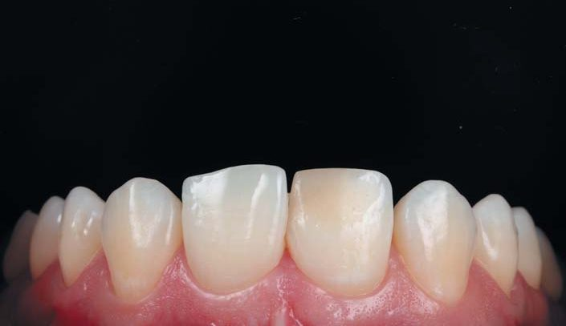
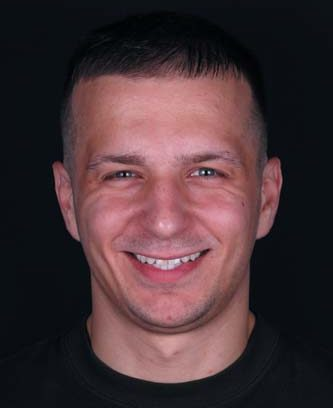
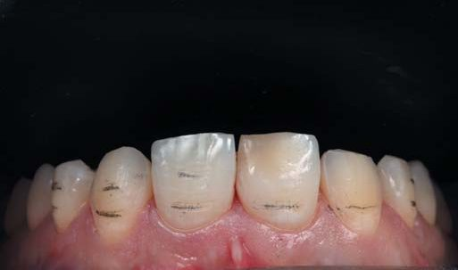
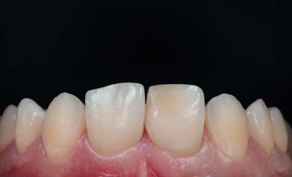
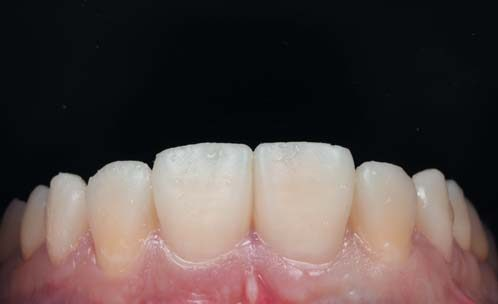
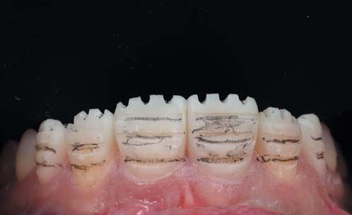
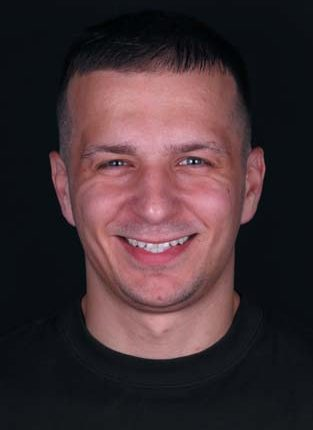
Препарування
За допомогою силіконового ключа переносимо макет майбутніх зубів (mоск-up) на пришліфовані зуби.
Вестибулярне маркування глибини препарування твердих тканин, а також редукція ріжучого краю провадилися за mock-up маркувальним бором Komet 868В 314 018 (Komet, Німеччина).
Потім mock-up був знятий. На зубах залишилися горизонтальні сліди, позначені олівцем. Зафарбовування вестибулярної поверхні зуба олівцем посилює контраст між препарованими та непрепарованими ділянками зуба і полегшує роботу. Горизонтальні борозни залишаються зафарбованими до моменту досягнення необхідної глибини препарування.
Препарування зубів 11, 13, 14 та 21, 23, 24 робилося діамантовими борами Komet 868 314 012, 8868 314 012, 868 314 016, 8868 314 016. На зубі 11 повністю видалили стару композитну реставрацію. Тому межею препарування є власні тканини зуба.
Редукція ріжучого краю в межах 1 мм дозволяє забезпечити плавний перехід прозорості і досягти оптимального естетичного результату. Упор, що утворюється при незначному препаруванні ріжучого краю, забезпечує правильне позиціонування вініра під час фіксації.
Препарування зубів провадилося з допомогою операційного мікроскопа. У межах емалі створювали необхідний простір для кераміки на рівні м’яких тканин.
Для передачі меж препарування в лабораторію було обрано хіміко-механічний метод ретракції за допомогою ретракційних ниток. Перша нитка без просочення Sure-Cord 000 забезпечила вертикальну ретракцію. Потім встановили другу нитку з просочуванням Sure-Cord 0 (експозиція 5 хв), яка забезпечила горизонтальну ретракцію. Її встановлювали безпосередньо перед зняттям цифрового відбитка.
Для надійної фіксації тимчасових конструкцій зроблені точкове протравлювання емалі та бондинг без попередньої полімеризації.
Наступним етапом було створення тимчасових конструкцій прямим методом і перенесення за допомогою силіконового ключа та самотвердіючої пластмаси Ivoclar Telio CS C&B (Ivoclar). Після вилучення силіконового ключа надлишки пластмаси в приясенній зоні були скориговані полум’яподібним бором. Далі на зубах з тимчасовими реставраціями було проведено полімеризацію адгезиву (20 с).
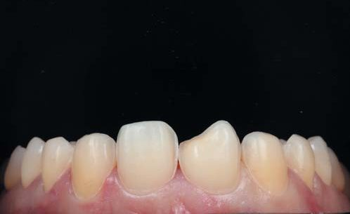
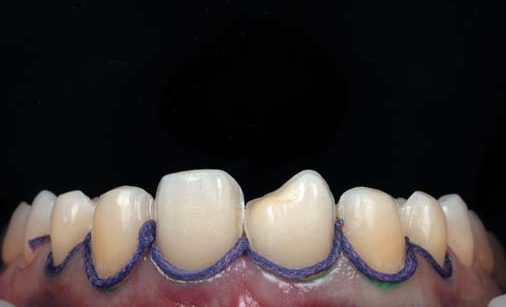
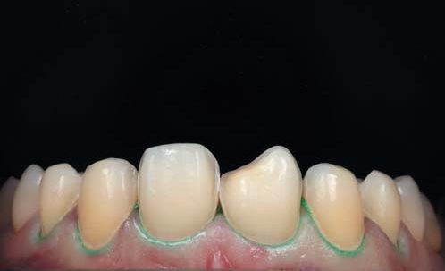
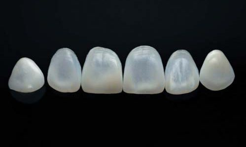
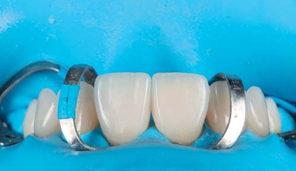
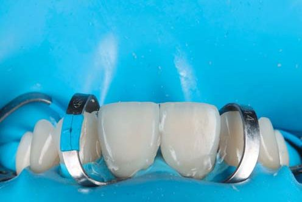
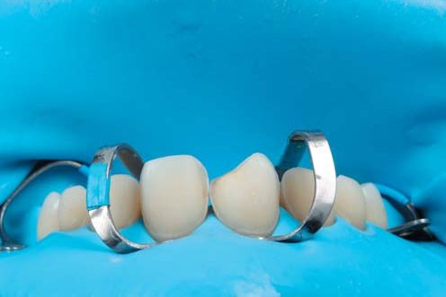
Примірка та фіксація керамічних вінірів
Третій візит пацієнта у клініку — для примірки та фіксації керамічних вінірів.
Першим кроком було зняття тимчасових конструкцій та полірування зубів від залишків адгезиву. Адекватно адаптовані тимчасові реставрації дозволяють зберегти здорову архітектуру м’яких тканин навіть за тривалого носіння. Примірка реставрацій на суху поверхню Dry Fit дає можливість проконтролювати точність прилягання конструкцій.
Під час другої примірки в реставрацію внесено Try-In paste Ivoclar відтінку Warm (Ivoclar) для імітації теплого відтінку постійного фіксуючого матеріалу. Переконавшись, що реставрації задовольняють естетичний запит пацієнта, можна братися до адгезивної фіксації.
Ми зробили ізоляцію за допомогою системи рабердам для контролю сухості операційного поля, що надзвичайно важливо при адгезивній фіксації.
Після цього проведено адгезивну підготовку кераміки:
- очищення керамічних реставрацій Ivoclean (Ivoclar), що ефективно очищає поверхню після внутрішньоротової примірки;
- динамічне протравлювання вінірів на рефракторі плавиковою кислотою 4.5 % протягом 60 с;
- експозиція етилового спирту 96 % на поверхні кераміки 30 с для очищення від залишків плавикової кислоти;
- силанізація поверхні кераміки за допомогою Monobond Plus (Ivoclar) для створення внутрішнього зв’язку між реставрацією та фіксуючим матеріалом.
На силанізовану поверхню кераміки було внесено адгезив системи ClearFil SE Bond 2 (Kuraray), експозиція 20 с, потім видалили розчинник за допомогою повітря. Внесено фіксуючий композит Variolink Esthetic LC відтінку Warm (Ivoclar). Для запобігання затвердінню композитного цементу реставрації помістили у помаранчевий світлозахисний бокс.
Сусідні зуби були захищені тефлоном. Після ізоляції проведено повітряно-абразивну підготовку емалі порошком оксиду алюмінію 27 мкм. Мікрошорсткість поверхні, яку отримуємо після обробки оксидом алюмінію 27 мкм, збільшує площу адгезивного з’єднання. Динамічне протравлювання емалі зубів протягом 30 с. Адгезивна підготовка зуба здійснювалася системою ClearFil SE Bond 2 (Kuraray).
Було зроблено точкову полімеризацію вінірів на зубах протягом 3 с. Далі надлишки фіксуючого матеріалу з вестибулярної поверхні прибрали пензликом. Після цього проконтролювали надлишки цементу в апроксимальних контактах за допомогою флосу.
Для уникнення профарбовування межі зуб — кераміка слід запобігти утворенню шару, інгібованого киснем, за допомогою Air-Block. Залишки адгезиву та цементу акуратно зрізані скальпелем.
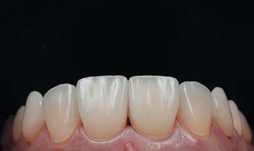
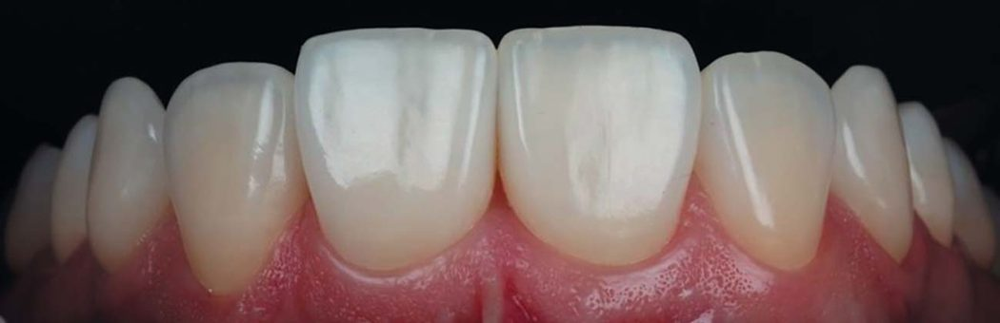
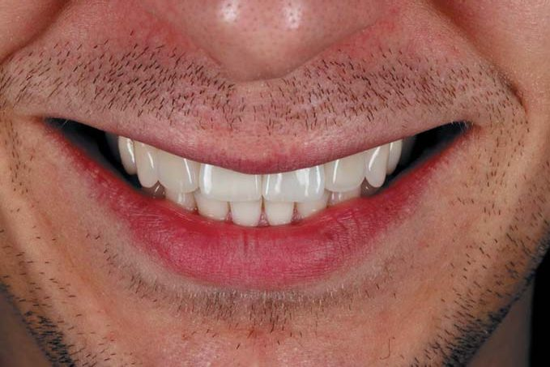
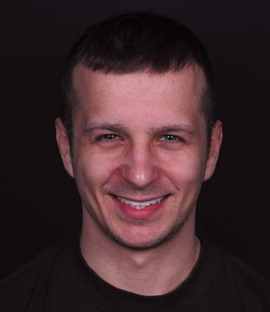
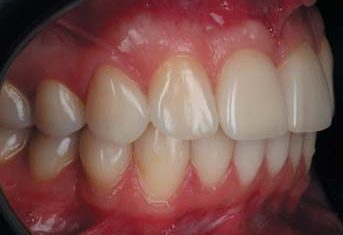
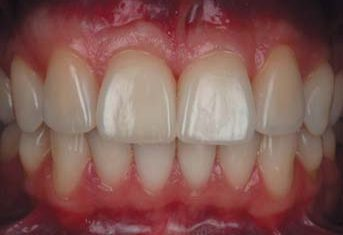
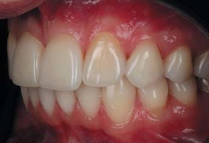
Висновки
Нам вдалося зробити успішну реабілітацію пацієнта в естетично значущій зоні. Адентія верхніх латеральних різців — досить поширений діагноз. Завжди потрібно виважено ухвалювати рішення у кожному клінічному випадку. Можна створювати місце під імплантацію верхніх латеральних різців та подальше протезування. Або обрати інший варіант лікування — трансформацію іклів у латеральні різці, а перших премолярів — в ікла.
Ідеальної техніки не існує, і результат завжди залежатиме від мануальних навичок лікаря-стоматолога і зубного техніка.